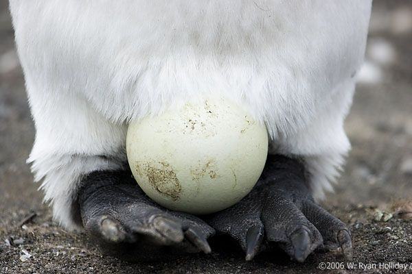
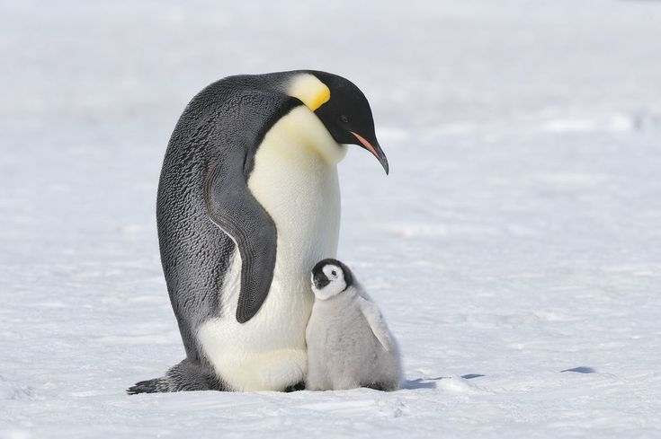
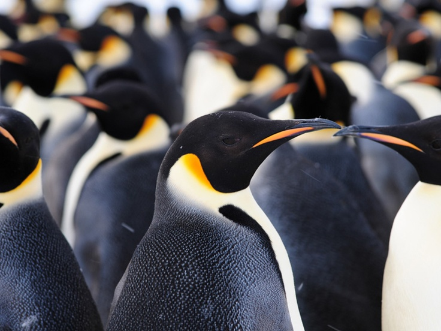
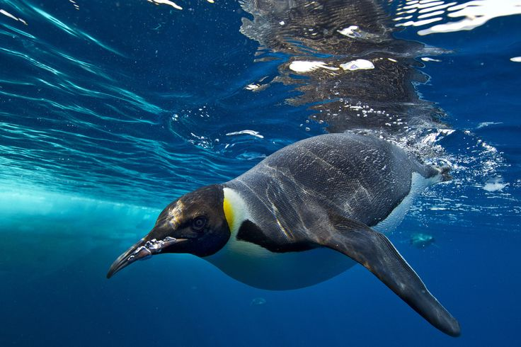
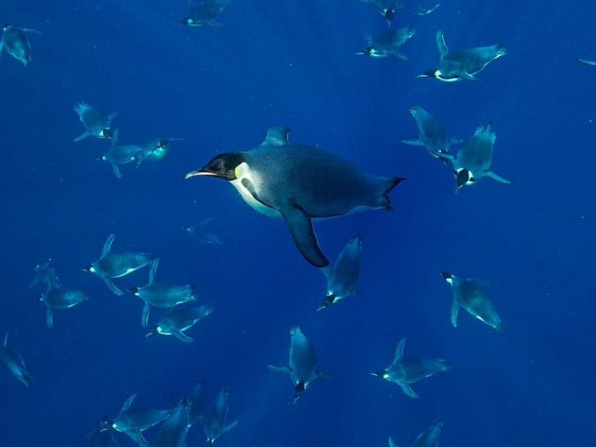
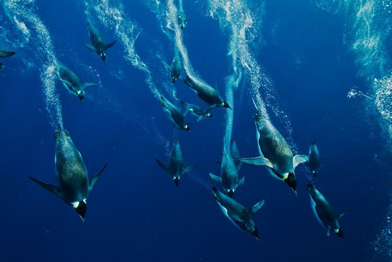

Pingüino Emperador
Aptenodytes forsteri
Es la especie más grande y pesada de pingüino, endémica de la Antártida, alcanzando hasta 1.20 metros y 40 kg.
Es la especie más grande y pesada de pingüino, endémica de la Antártida, alcanzando hasta 1.20 metros y 40 kg.



1.1 — 1.3 m
22 — 45 kg
Antártida
Peces, calamares y krill



